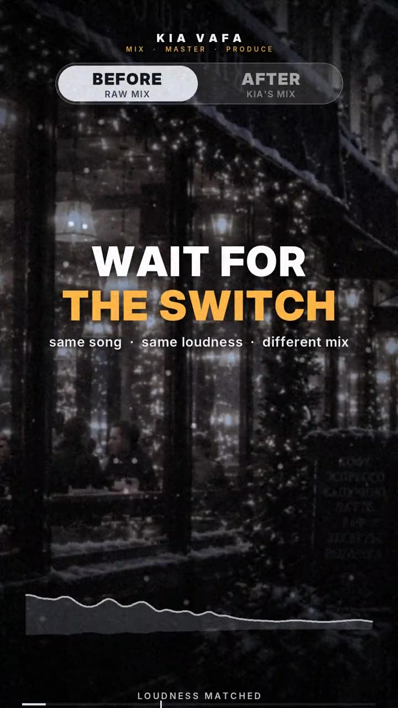
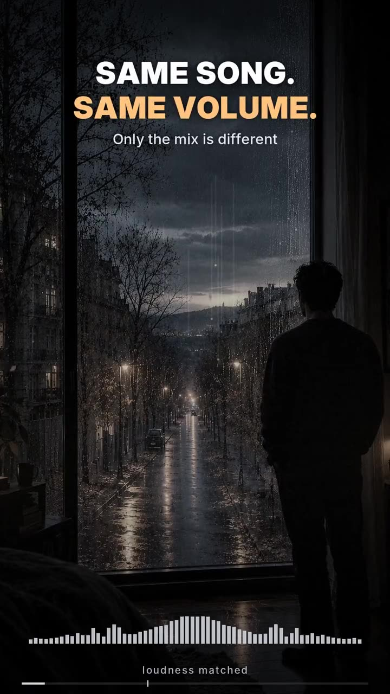
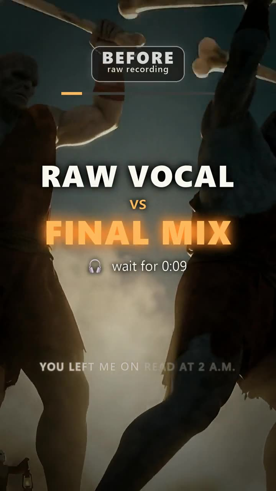
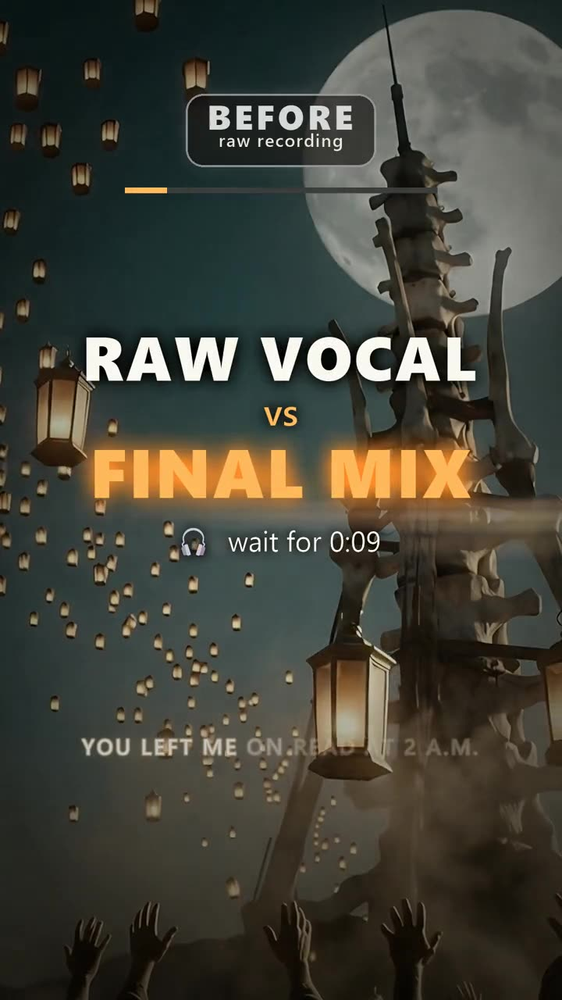
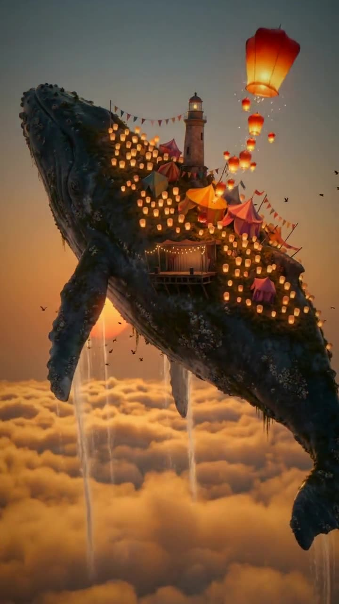
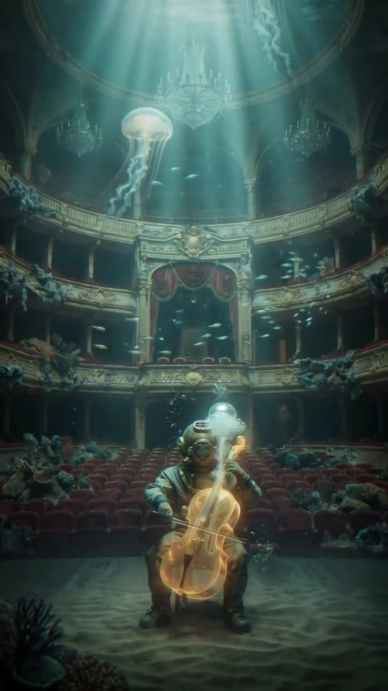
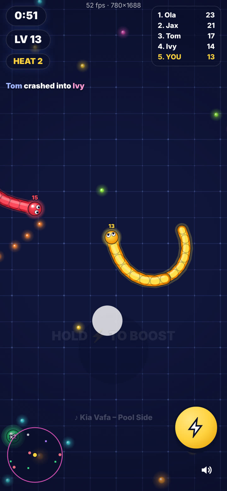

I mix and master songs for independent artists and producers. Pick a track, press play, and flip between the rough version and my mix while it plays.
Short clips from my channel. Hover to preview, click to watch with sound. The last two are music videos I cut to my own tracks.






Besides music, website design and AI video, I design and build games. Snake Rumble is a sample of that work: a fast snake arena that runs right in the browser on phone or desktop, with my own tracks under it.

Drag to steer, eat glowing orbs to grow, and cut across the path of rival snakes so their head hits your body. Rounds last 75 seconds, get harder every 12, and end with a boss hunt. Free, no install, no ads, no sign-up.
These are starting prices. Send the track first and I'll tell you what it actually needs, which is sometimes less than you think. Listening is free.
Full mix from your stems plus a streaming-ready master. Vocal tuning and cleanup included.
Your finished mix, made loud, clear and consistent on every platform.
Stems, cleanup, mix and master so your AI track stops sounding like a demo.
Melodic house and techno, produced to your reference, fully yours.
Arrangement, live-feel production and mixing for Persian pop.
Visuals cut to the beat. Vertical for Reels and Shorts, or 16:9.
Cleanup, levels, intros and outros so every episode sounds professional.
Every mix comes with 3 revisions and is usually done in 3 to 5 days. I work in Cubase and Ableton with UAD gear, and you get a streaming-ready master plus the files you need for release.
I'm Kia Vafa, a mixing and mastering engineer and producer based in Canada. I trained at a music conservatory and spent years coaching singers and playing piano behind them at concerts. That's where I learned how much a good record depends on the voice.
Today most of my week is mixing and mastering other people's songs: indie artists, Suno and AI creators, singers, and producers who need a second pair of ears. I also release my own music and run a small independent label, Vafa Media Group.
27 releases since 2023 · 3 revisions on every mix · usually 3 to 5 days per song · Cubase, Ableton, UAD
Kia Vafa is a Canada-based mixing and mastering engineer, producer and arranger. Trained at a music conservatory, he spent years coaching singers and playing piano for them at concerts before the studio became his main home. He writes, arranges, produces and mixes his own songs, moving between pop ballads, electronic textures and melodic lines built around a strong vocal, and mixes and masters records for independent artists, from Persian pop and hip hop to R&B and electronic music. He founded the independent label Vafa Media Group. His latest release is "Where the Leaves Fall".
Send me a link or your stems. I'll listen and tell you what I'd do, before you pay anything.